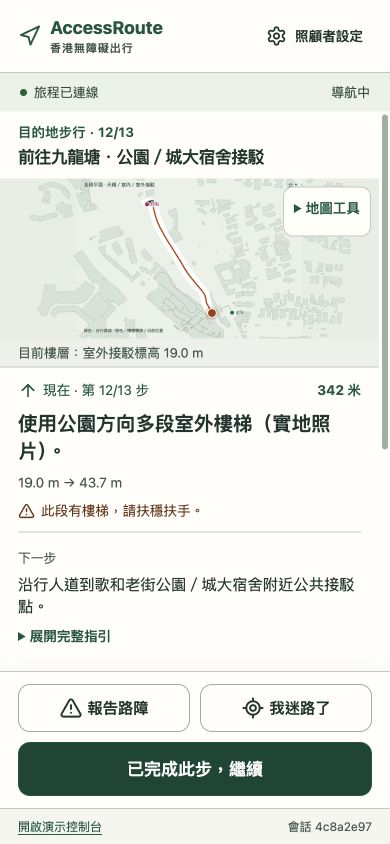
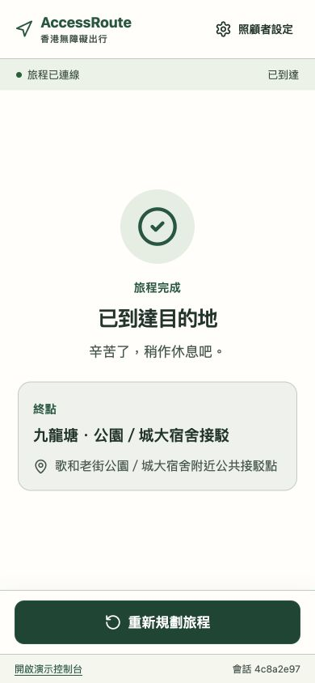

Origin walking
Navigate PopCorn 2’s corridors and lifts to the transport connection. Personal mobility settings determine the available path.
Choose your needs, follow each stage and update the remaining route when the situation changes.
A complete journey combines walking at each end with a rail stage between them.
Navigate PopCorn 2’s corridors and lifts to the transport connection. Personal mobility settings determine the available path.
Follow the station sequence from Tseung Kwan O through Tiu Keng Leng to Kowloon Tong.
Leave Kowloon Tong through Exit F. Continue towards the Cornwall Street public interchange using the outdoor path or a route through Festival Walk.
The route overview, current instruction and arrival screen share the same journey state.



The team’s field video follows the route from the station through the surrounding pedestrian connections.
Kowloon Tong Station, Festival Walk and the surrounding paths. 33 seconds.
Download videoSubmit a photo or description. Review the affected facility or path, then confirm the report to update the route.
Photograph a visible landmark. The system compares it with nearby map candidates and asks you to confirm the position.
The planner starts at the updated position and keeps the completed stages. Read the next step or play its Cantonese instruction.